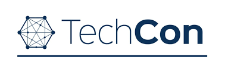
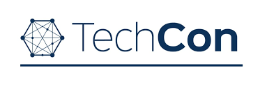

History
TechCon began in 2010 as a small local event and has grown into a major international tech conference over the years.
Join the world's top tech leaders, innovators, and enthusiasts for a dynamic conference exploring the future of technology, innovation, and digital transformation.
TechCon began in 2010 as a small local event and has grown into a major international tech conference over the years.
Our mission is to empower the tech community by creating an inclusive space for collaboration, learning, and innovation.
AI researcher and ethics advocate.

Cloud computing visionary and infrastructure expert.
Cybersecurity leader working with government and startups.